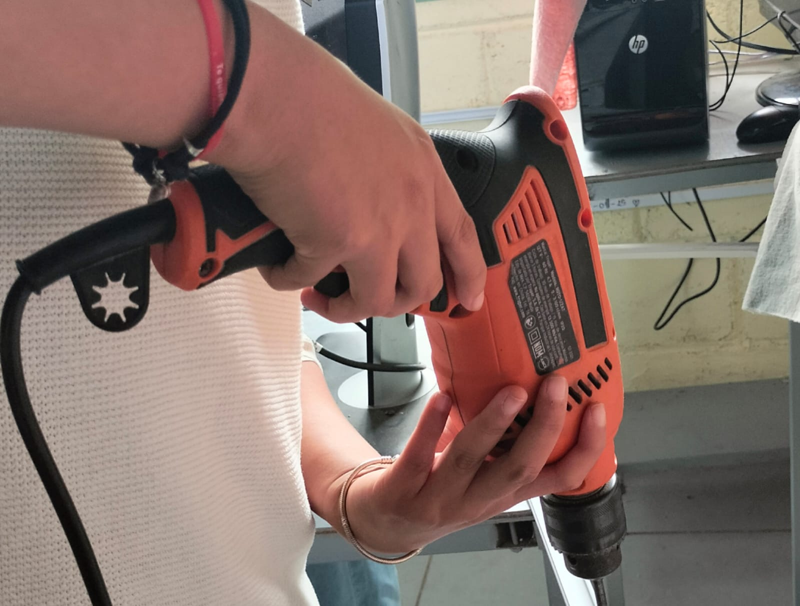

¿QUE REQUERIMIENTOS TÉCNICOS SE EMPLEAN EN LAS REDES ALÁMBRICAS?
Se basan en la infraestructura física, dispositivos de red y estándares de conexión para garantizar alta velocidad y estabilidad . Los elementos fundamentales son: infraestructura de cableado, dispositivos de red, estándares y topología, herramientas de conexión, requerimientos de software y configuración.

volver al menu